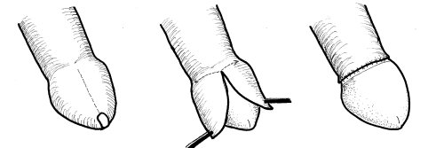
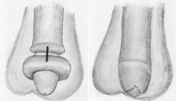

You are here: Urology Textbook > Surgery (procedures) > Circumcision
Male Circumcision
Indications for Circumcision
Medical Indications for Circumcision
Religious and Non-Religious Traditions
Circumcision is most often done for religious or non-religious reasons in the postnatal period and in childhood. The circumcision of the child due to the request of the parents is legally problematic. The child's right to physical integrity collides with the religious or traditional wishes of the parents.
Contraindications for circumcision
Contraindications to circumcision are coagulation disorders, acute and untreated balanitis, paraphimosis with necrosis or prominent edema, untreated hypospadia with the need for a surgical therapy.
Surgical Technique of Circumcision
Preoperative Preparations
Disturbing hairs of the suprapubic region is removed. Local anesthesia is sufficient for adults, the penis basis is circumferentially infiltrated (penile block). As an alternative, spinal anesthesia or general anesthesia (in children) is used. A penile block facilitates general anesthesia and reduces postoperative pain. The skin disinfection should be done with retraction of the prepuce, if possible.
Incision on the outer layer of the prepuce
A skin incision along the coronary sulcus is performed. Depending on surgical technique, the skin incision is performed close or distal to the coronary sulcus:
- Radical (complete) circumcision [fig. complete circumcision]: skin incision of the outer layer of the prepuce next to the coronary sulcus and frenulum. To avoid a narrowing of the penile skin, the incision is made obliquely.
- Incomplete circumcision: skin of the outer layer of the prepuce is spared, the skin incision is made more distal than in complete circumcision.
|  |
Sleeve Resection
Incision of the prepuce at 12 o'clock up to 5 mm of the sulcus. In phimosis, the prepuce can now be retracted and disinfection should be repeated. Adhesions between prepuce and glans can be divided with a probe. Circular incision of the inner layer follows, the resection line should keep a distance of 3–5 mm to the glans. In incomplete circumcision, more of the inner foreskin can be preserved. The sleeve of the prepuce is removed and meticulous hemostasis is performed with special care for the frenular artery. Reconstruction of the frenulum with sutures can also help in achieving hemostasis.
Skin Suture
After resection of the prepuce sleeve and meticulous hemostasis, the skin edges are reapproximated using rapidly absorbable sutures (4-0 or 5-0). Depending on hemostasis, a wound dressing with compression of the wound can be applied.
Wound Care after Circumcision
Change of the wound dressing in the first few days depending on wound secretion. Showers are allowed, direct cleaning of the wound should be avoided. After incomplete circumcision, a regular retraction of the prepuce can minimized disturbing skin adhesions.
Complications of Circumcision
- Bleeding, hematoma
- Wound infection, wound dehiscence
- Disturbing scars and adhesions
- Fistula of the urethra
- Hyperesthesia or hypoesthesia of the glans
- Erectile dysfunction after severe complications
Serious complications should be uncommon. In the case of infant circumcisions, up to 6% need a reoperation due to bleeding, wound revision or meatal stenosis.
Alternative Techniques of Circumcision
Newborn Circumcision
After local anesthesia of the penis, circumcision is performed using a Gomco clamp, Mogen clamp or with the Plastibell technique.
The complication rate for newborn circumcision is 0.2–3%. Most complications are minor, but also devastating complications like partial glans removal or ablative penile injury have occured.
Therapy of Paraphimosis: Dorsal Incision
Dorsal incision (in local anesthesia) is the initial therapy of a paraphimosis, which cannot be reduced. The dorsal incision cuts the phimotic ring in longitudinal direction. After the incision, the prepuce should be retractable without resistance. Transverse suture of the dorsal incision closes the skin defect and helps in hemostasis [fig. dorsal incision]. Circumcision should be postponed until the edema of the prepuce has resolved.
|  | Therapy of inretractable paraphimosis: dorsal incision. |
| Urologic Surgery | Index | Penis, diseases |
Index: 1–9 A B C D E F G H I J K L M N O P Q R S T U V W X Y Z
References
 Deutsche Version: Technik der Zirkumzision
Deutsche Version: Technik der Zirkumzision